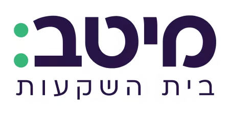

תכנון פיננסי
ניהול תיק השקעות חכם ומגוון - גידול הון לטווח ארוך
לפרטים נוספיםניווט ההון המשפחתי בראש שקט
ליצירת השילוב המנצח

הכל תחת קורת גג אחת — ONE STOP SHOP
תכנון פיננסי מתקדם לכל שלב בחיים
ניהול תיק השקעות חכם ומגוון - גידול הון לטווח ארוך
לפרטים נוספיםניהול אקטיבי של תיק ניירות הערך ופוליסות החיסכון הפיננסי
במגוון מסלולי השקעה
סקירת תיק הביטוח - ווידוא שהכיסויים מקיפים ובדיקת העלויות
לפרטים נוספיםמסלול מותאם לפרישה בגיל צעיר - חיים את החלום כמה שיותר מוקדם
לפרטים נוספיםליווי מקצועי לתכנון הפרישה האידיאלית - שיבטיח את רמת חייך
לפרטים נוספיםביטוחי רכב, דירה ועסק — כיסוי מקיף בתנאים הטובים ביותר
לפרטים נוספיםליווי מקצועי לקבלת המשכנתא הטובה ביותר —
מבנה נכון, ריבית מיטבית וחיסכון משמעותי בעלויות
סיוע בהכנת התשתית הכלכלית להעברת נכסים ליורשים בצורה יעילה, כולל התחשבות בהיבטי מס ומשפחה.
לפרטים נוספיםאיתור ומיצוי החזרי מס לשכירים ועצמאים
כסף שמגיע לך, בחזרה אליך
גיוון תיק ההשקעות מעבר לשוק ההון — נדל"ן, קרנות פרטיות וכלים ייחודיים לתשואה יציבה
טל גבאי
מתכנן פיננסי לבכירים | מנכ"ל ובעלים
מתכנן פרישה | בעל תואר שני M.B.A במנהל עסקים
המסע המקצועי שלי בעולם הכסף החל בלב העשייה הפיננסית בישראל. בשנת 2006 כיהנתי כמנהל בבית ההשקעות אקסלנס,
שם רכשתי הבנה מעמיקה וייחודית על הדרך שבה שוק ההון פועל "מאחורי הקלעים",
את הניסיון והכלים לנתח הזדמנויות פיננסיות ולפעול מתוך ראייה אסטרטגית רחבה.
בכדי להביא את הסטנדרטים הגבוהים של שוק ההון המוסדי לבית הלקוח, הקמתי בשנת 2011 את המשרד שמנהל כיום באחריות ובמקצועיות את עתידם הפיננסי של מאות משפחות בישראל.
השילוב בין השכלה אקדמית רחבה (M.B.A) לבין ניסיון שטח של מעל 2 עשורים, מאפשר לי להעניק ללקוחותיי:
היעד שלנו הוא למקסם את פוטנציאל הכסף שלכם ולהוריד מכם את הדאגות
בכדי שתוכלו להתפנות למה שבאמת
חשוב בחיים
הכנת מסלקה פנסיונית והר הביטוח. בירור מאזן ההכנסות, הנכסים מול ההתחייבויות.
בניית תוכנית מותאמת אישית לשילוב השקעות, ביטוח ומיסוי,
הגדרת היעדים והתאמת פרופיל: סיכון, טווח השקעה וטעם אישי
ביצוע ארגון מחדש של התיק והתאמתו ליעדי התוכנית הפיננסית האופטימאלית.
בחינה תקופתית של התיק והתאמתו לצרכים, לשינויים בשוק ההון ובבתי ההשקעות.
אופטימיזציה הוליסטית 360° של התיק הפיננסי והפנסיוני והביטוחי
ניהול פיננסי מקצועי ברמה הגבוהה ביותר!
מעל 20 שנות ניסיון בתחום
הפיננסים והביטוח
זמינות גבוהה של המשרד בשעות העבודה ובעת הצורך גם מחוץ להן
מענה מהיר ומקצועי
יחס אישי ומותאם
ניסיון עשיר ושירות בסטנדרטים הכי גבוהים
זה מה שעושה את ההבדל
האמון שלכם הוא ההצלחה שלנו
"אני עובד עם טל והצוות שלו כמעט 8 שנים. העבודה עם טל מתאפיינת בסבלנות רבה, השקעת זמן בהבנת צורכי הלקוח המיידיים ולטווח הבינוני והארוך, הבנת רמת הסיכון הפיננסי, והתאמת מגוון רחב של כלים פיננסיים בהסתכלות כוללת. טל תמיד זמין לשאלות, מפגין בקיאות ועדכניות בכל הנוגע לשוק ההון, ובאופן פרואקטיבי יוצר ויוזם בדיקה תקופתית של התיק הפיננסי, ומציע הצעות לשיפור ולשינוי. העבודה עם טל ועם צוות המשרד תמיד נעימה, נותנת תחושה של משפחתיות, אדיבות ושירותיות ראויים לציון. לסיכום, לאורך שנות העבודה שלי עם טל אני מרגיש שאני בידיים בטוחות, שיודעות לנווט ולעזור בתחומי שוק ההון והפיננסים, גם בתקופות רגועות ובפרט בתקופות סוערות."
"טל גבאי מלווה את המשפחה שלנו בתיק הפנסיוני ובהשקעות כ-15 שנה, ומביא איתו מקצועיות בלתי מתפשרת וניסיון עשיר בשוק ההון.
הוא אמין, שומר על קשר אישי רציף ומעדכן ביוזמתו, ומעניק תחושת ביטחון אמיתית בכל החלטה.
ממליץ בחום למי שמחפש שקט נפשי וליווי פיננסי אישי ומקצועי עם שמירה על אותה תשוקה ומחויבות,
גם אחרי שנים רבות."
"טל מנהל לי את ההשקעות יותר מעשור. זמין, קשוב, ונעים, תמיד בצד שלי כלקוח.
ולא פחות חשוב - אקטיבי ויוזם - תמיד עם היד על הדופק ופונה אלי כשיש הזדמנות להורדת עלויות ושיפור בתנאים. מומלץ בחום."
"במשך תקופה ארוכה השקעותיי נוהלו בבנק. בשלב מסוים החלטתי להעביר חלק מהן ליועץ השקעות ובחרתי בהמלצת חבר בטל גבאי. כל השקעותיו נשאו פירות ובעקבות זאת העברתי את כל השקעותי לניהולו וגם הן נשאו פרי. אני משתמש בשרותיו כבר שלוש עשרה וחצי שנים שנשאו פירות יפים מאוד. בנוסף ליכולותיו אלה טל הוא אדם ישר והגון, תכונות חשובות מאוד אך לא שכיחות. תודה טל."
"טל גבאי הוא המלווה הפיננסי שלי כבר 12 שנים, מאז 2014. הוא איתי מתכנון היציאה לפנסיה ומאז בהמשך הדרך.
טל הוא איש מקצוע מצוין, מכיר ועוקב אחרי השוק ותמיד ממליץ על שינויים בהתאמה.
הצוות שאיתו הוא צוות מקצועי ואדיב שתמיד נותן עזרה ברצון, במקצועיות ובזמן קצר.
אני מאוד ממליץ להיעזר בשירותיו."
"התחלתי לעבוד עם טל לפני 13 שנים. למדתי להעריך את המקצועיות והיסודיות, את הסבלנות והזמינות, ואת הרצון לנמק עד הסוף כל המלצה, להיות קשוב אלי, ולספק לי, באמצעות הצוות שלו, שירות מהיר, מקצועי ואדיב.
בשורה התחתונה — אני מרגיש רגוע ובטוח שהכסף שלי מנוהל על ידי מקצוען, שמכיר היטב את הצרכים והרצונות שלי ופועל לתת להם מענה מיטבי."
"אני בקשר עם טל גבאי כבר 12 שנים.
במשך השנים, קיבלתי ממנו ייעוץ מקצועי, המלצות לכיווני השקעה ולניהול קופות הגמל וקרנות ההשתלמות שלי וגם אזהרות לגבי פעולות שמנעו ממני הפסדים אפשריים.
ההנחיות שקיבלתי ממנו לביצוע שינויים והתאמות בקופות הגמל הוכיחו את עצמן לאורך שנים.
הוא דואג באופן קבוע לשמור על קשר אישי לעדכונים יזומים ולמתן המלצות תקופתיות."
"טל מלווה אותי ואת משפחתי מספר שנים.
בעקבות ניסיונו הרב הליווי שלו מדויק ובעל ערך, וזה מאוד משמעותי עבורי, מכיוון שאין לי הבנה כלל בשוק ההון.
טל זמין לכל שאלה והתייעצות ועושה זאת בשמחה ובדרך נעימה.
הזדמנות לומר תודה!!"
"אני עובדת עם טל גבאי, המתכנן הפיננסי שלי, מאז 2013.
מדובר בליווי מקצועי, אמין ורציף לאורך שנים.
טל מקפיד על התאמה אישית של הפתרונות לצרכים שלי, מסביר בצורה ברורה ושומר על שקיפות מלאה בכל שלב.
המקצועיות, הזמינות והראייה לטווח ארוך מעניקים לי ביטחון ושקט נפשי בניהול העתיד הפיננסי שלי.
ממליצה עליו בחום לכל מי שמחפש ליווי פנסיוני רציני ואחראי."
"טל הוא יועץ פיננסי מקצועי מאד, ענייני, עם אסטרטגיות השקעה מגוונות.
טל מכיר את השווקים ופועל מתוך זהירות ראויה ומתוך העדפה ברורה של האינטרסים והפרופיל של הלקוח.
אחרי שנים של ייעוץ, המעגל של הלקוחות של טל בחוג המשפחה רק הולך ומתרחב."
"ברצוני להמליץ בחום על טל גבאי שאיתו אני עובד כ-15 שנים, במקום עבודה ישירה עם הבנק.
טל הינו מתכנן פיננסי מקצועי, אשר מכיר את חברות ההשקעה מבפנים.
לטל הבנה מעמיקה של צרכי הלקוח ויכולת לבנות תכנית פיננסית מותאמת אישית.
עבודתו מאופיינת באמינות, שקיפות ומחויבות אמיתית להצלחת הלקוח.
כל מי שיבחר להיעזר בשירותיו ייהנה מליווי מקצועי ואיכותי לאורך זמן."
"טל משמש כמתכנן הפיננסי שלי שנים רבות (לפחות 15), ובזכותו הכספים שלי זכו לתשואות יפות מאוד לאורך השנים!
מדובר בבחור סופר מקצועי ואינטליגנטי, חרוץ ובעל ידע רב בתחום, בעל סבלנות ללא גבולות לנהל שיחות ולהסביר כל מה שצריך כדי שהלקוח יבין וירגיש טוב ובטוח.
דואג ליזום שיחות והמלצות באופן שוטף, ותמיד כיף לדבר איתו.
בקיצור — מומלץ ביותר :)"
"אני עובד עם טל גבאי משנת 2012 — למעלה מ-14 שנים של ליווי פיננסי רציף.
המלצותיו הן אובייקטיביות ומבוססות עובדתית, תוך היכרות מעמיקה עם השוק הפיננסי בישראל, היכרות אישית עם מנהלי בתי ההשקעות, ומותאמות במדויק לצרכיי האישיים.
טל מתאפיין גם באסרטיביות חשובה שמסייעת לקבל החלטות נכונות בזמן, וכן בזמינות גבוהה ובנכונות לתת מענה בכל עת.
ממליץ עליו בחום."
"אנחנו עובדים יחד עם טל כבר 14 שנים.
מרוצים מאוד מהתפוקה שלו ומהתשואות של החברות שהוא ממליץ עליהן.
בעל ידע רחב ומעמיק בתחום ההתמחות שלו.
חרוץ ומוכן להשקיע זמן עבור כל
לקוח ."
"אני עובד עם טל גבאי כבר למעלה מ-11 שנים, ובמהלך כל התקופה הזו אני נהנה מליווי מקצועי, עקבי ואמין ברמה גבוהה.
טל מפגין הבנה עמוקה של השוק ותמיד קשוב למגמות משתנות. הוא יודע לזהות בזמן מתי נכון לבצע התאמות, וממליץ על שינויים במסלולים כשצריך — בצורה שקולה ואחראית.
אחד הדברים שאני מעריך במיוחד הוא ההיכרות שלו עם ההעדפות האישיות שלי ועם רמות הסיכון שמתאימות לי. ההמלצות שלו תמיד מותאמות אליי, ולא גנריות.
מעבר למקצועיות, טל מעניק שירות צמוד לאורך שנים, ושומר על אותה רמת זמינות, איכות ואכפתיות — דבר שלא מובן מאליו לאורך זמן.
אני מאוד מרוצה מהליווי שלו, וממליץ עליו בחום לכל מי שמחפש ניהול מקצועי, אישי ואמין של כספים והשקעות."
"טל מלווה אותי כבר למעלה מ-10 שנים ומוכיח שיש אלטרנטיבה נעימה לניהול פנסיוני.
עם זמינות שיא הוא תמיד מוצא את האיזון הנכון בין שכנוע והקשבה עד לקבלת החלטה."
"אחרי לא מעט בלבול בעולם הפיננסי, טל עשה לי סדר אמיתי.
הליווי היה מקצועי, נעים ובעיקר מותאם אישית.
מרגיש שיש לי על מי לסמוך בהחלטות חשובות.
ממליץ מאוד."
"טל גבאי סוכן תכנון פיננסי, ניהול הון ותכנון פרישה — מקצוען, מנוסה, אחראי ומסור ללקוחותיו, ובעל עצות ותובנות חכמות מאוד.
הוא זמין ומשוחח בסבלנות ובתשומת לב רבה.
כשנמנים על לקוחותיו נמצאים בידיים אמונות ואחראיות.
מתוך שנים רבות של היותי נמנה על לקוחותיו — ממליץ עליו בחום."
"טל גבאי הוא הסוכן הפיננסי שלי כבר 15 שנה!! טל הוא תותח על!! ולא בכדי אנחנו עובדים יחד כל כך הרבה שנים!!
אני רוצה להמליץ בחום על טל – על ההמלצות המצוינות והמדויקות שלו, על הליווי הצמוד, על התגובה המהירה, על היכולת להתמקח מול בתי ההשקעות ולהשיג עבור הלקוחות שלו את התנאים הטובים ביותר, על התקשורת הנעימה והכייפית.
לכל מי שמחפש איך להתנהל נכון מבחינה פיננסית – שלא יחשוב פעמיים ויפנה לטל.
ולחיי 15 השנה הבאות!!"
השאירו פרטים ונחזור אליכם בהקדם האפשרי